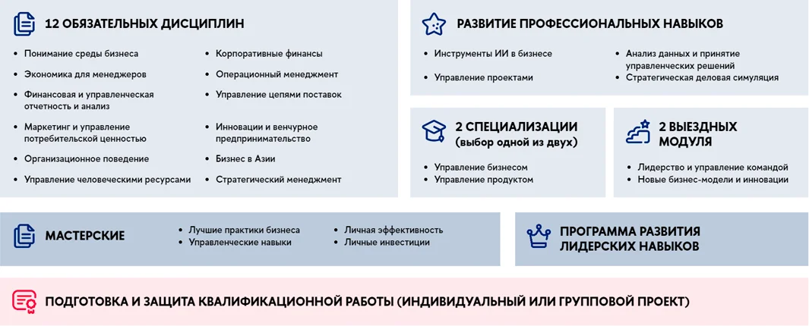

Базовые дисциплины
Финансы, экономика, маркетинг, операционный менеджмент, организационное поведение и стратегия.
Продолжается набор
Мастер делового администрирования для руководителей, предпринимателей и специалистов, которые хотят системно управлять бизнесом, командой и ростом.
О программе
Программа помогает собрать управленческую картину целиком: экономика, финансы, маркетинг, операции, стратегия, HR и лидерство. Участники работают с кейсами, проектами и инструментами, которые можно применять в текущей работе.
Логика сайта в референсе построена как деловой лендинг: сначала обещание и параметры, затем структура обучения, преимущества и понятный следующий шаг.
Структура
Финансы, экономика, маркетинг, операционный менеджмент, организационное поведение и стратегия.
Проектное управление, анализ данных, принятие решений, работа с ИИ-инструментами в бизнесе.
Выбор направления под личную траекторию: управление бизнесом, продуктом или развитием компании.
Индивидуальная или групповая квалификационная работа с защитой управленческого решения.

Формат
Занятия объединяют очные модули, онлайн-встречи, разборы кейсов и проектную работу. Такой формат подходит тем, кто совмещает обучение с интенсивной занятостью.
Для кого
Чтобы усилить системность управления, финансы, стратегию и работу с командами.
Чтобы масштабировать бизнес, найти точки роста и структурировать управленческие решения.
Чтобы перейти на управленческий уровень и говорить с бизнесом на языке результатов.
Заявка
Оставьте контакты, и координатор программы расскажет о расписании, поступлении и формате обучения.